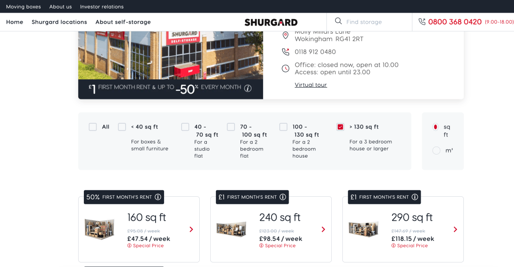
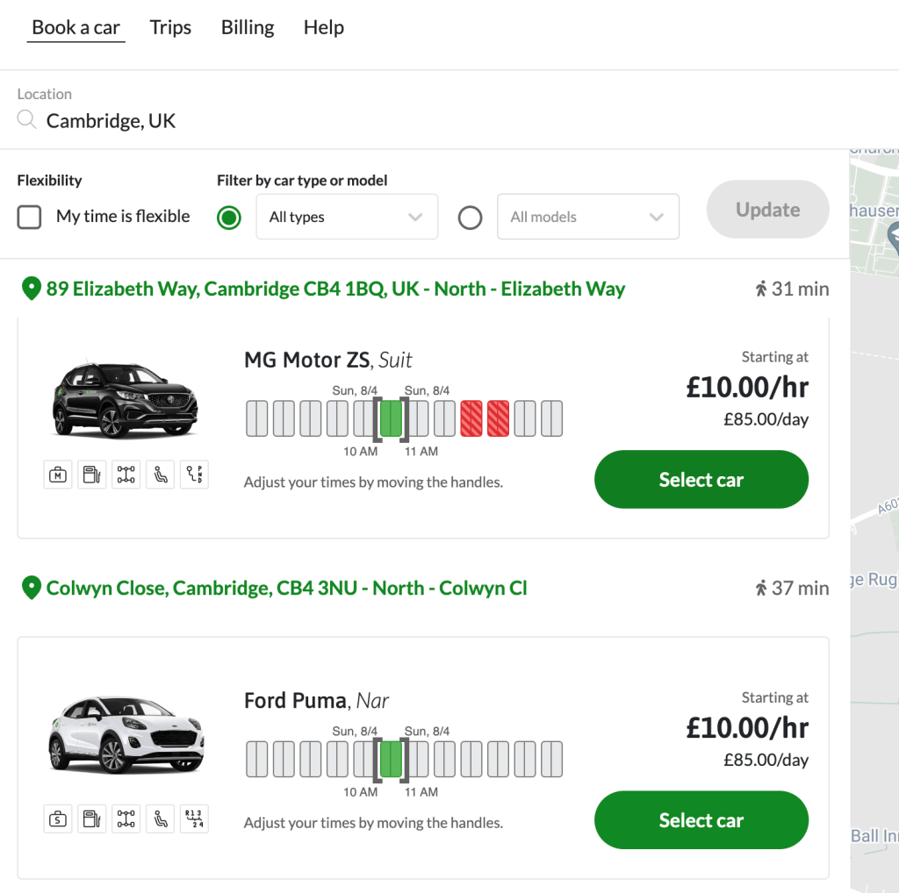
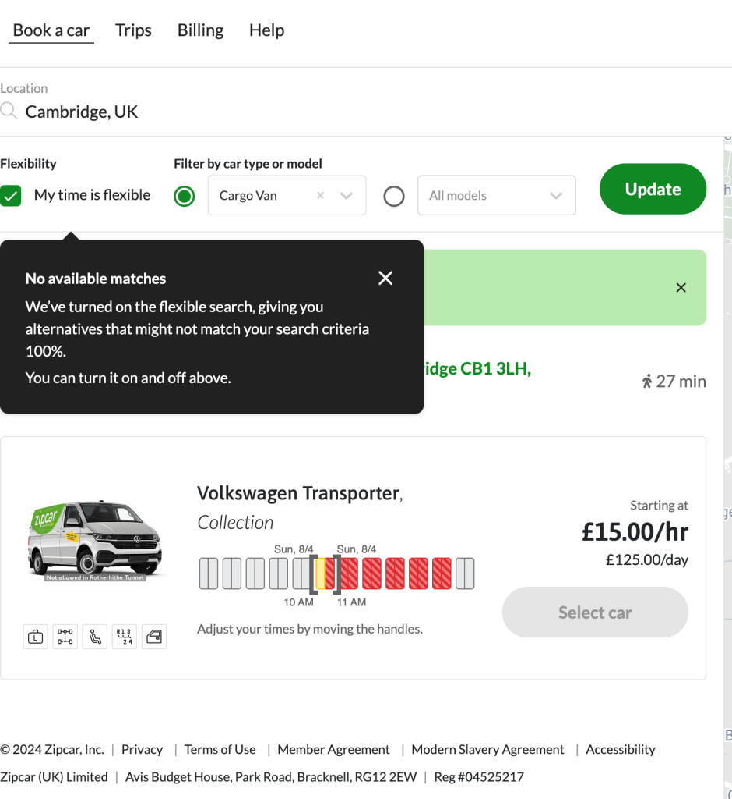
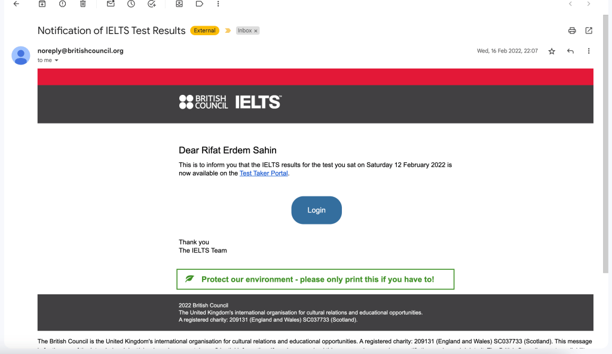

Planning a Successful Relocation: A Comprehensive Guide
Step-by-Step Relocation Guide
Relocating to a new home is a significant event that requires careful planning and organization. Here’s a comprehensive guide to help you manage the logistics, save money, find the perfect house, ensure your children are enrolled in good schools, and get settled smoothly.
1. Save Money
Relocating can be costly, but with strategic steps, you can save money:
-
Create a Budget: Estimate costs like hiring movers, purchasing packing supplies, and travel expenses. For an intra-UK move, it’s around £6,000.
-
Cut Unnecessary Expenses: Reduce non-essential spending, such as dining out less frequently or canceling unused subscriptions. Consider moving out of your studio to save.
-
Give Necessary Notices: Notify real estate agents and your nursery about your move.
-
Sell Unwanted Items: Declutter and sell items you no longer need through platforms like Facebook Marketplace.
2. Find a House
Finding the right home is crucial:
-
Research Neighborhoods: Look for areas that fit your lifestyle and budget. Use resources like Rightmove.com to find potential homes.
-
Work with a Realtor: Email realtors explaining your requirements to get valuable insights and options. Visit potential homes on Thursdays, combining work with these visits.
3. Find a School
For families with children, finding a good school is essential:
-
Research School Districts: Use websites like GreatSchools and Niche for school ratings and reviews.
-
Visit Schools: Meet with teachers and administrators to understand the school environment.
-
Check Enrollment Requirements: Ensure you have all necessary documents for enrollment.
4. Get the Yellow Badge at Work
If required, obtaining your work badge is essential:
-
Contact HR: Understand the process and requirements for obtaining the yellow badge.
-
Submit Required Documents: Complete any necessary training and document submission.
-
Schedule Badge Pickup: Arrange a pickup time to avoid delays when starting work.
5. Get a Van Zipcar
Having a reliable vehicle for moving day is crucial:
-
Reserve Early: Book your Zipcar van well in advance.
-
Check Policies: Understand Zipcar’s mileage and fuel policies.
-
Plan Your Route: Map out your moving route to avoid traffic and ensure efficiency. The commute is approximately 2 hours.
-
Move the boxes to the home from the storage and studio. Get more boxes, label and move them
6. Box Items in the Flat and Studio
Packing can be time-consuming but manageable with organization:
-
Gather Supplies: Stock up on boxes, tape, bubble wrap, and markers.
-
Organize by Room: Pack items by room, labeling each box with contents and destination.
-
Protect Fragile Items: Use bubble wrap for fragile items and mark boxes clearly.
7. Move Out of the Flat
Moving day requires coordination:
-
Hire Movers or Enlist Help: Use AnyVan or enlist friends and family to help.
-
Do a Final Walkthrough: Ensure nothing is left behind and check for damages.
-
Return Keys: Return keys to your landlord or property manager.
-
Animal Transfer: Use enclosures to move animals like fish and turtles safely.
8. Settle in the New House
Settling in involves setting up essentials and exploring the new area:
-
Move the Family First: Ensure beds and essential items are moved first.
-
Unpack Essentials First: Start with toiletries, kitchen supplies, and bedding.
-
Set Up Utilities: Ensure electricity, water, and internet are functioning.
-
Explore the Neighborhood: Get familiar with nearby amenities.
-
1-1 Screens for devices : Set screens for the xbox and stream and nintendo
9. Closure Tasks
Complete final tasks to wrap up your move:
-
Collect Deposits: Ensure you collect deposits from the studio and flat.
-
Clean the House and Studio: Clean thoroughly before moving out.
-
Take Pictures: Document the condition of the property for your records.
10. Background Tasks
Complete necessary tasks in the back.
-
UKVI Applications : Citizenship , ILR applications and exam process
-
Openshift: Work till the last moment all in and help with deployments.
-
Update CVs: All the updates have the backup plan showing your location as Reading and mention the no mortgage and moving for 24 month contracts.
-
The business location as Cambridge CB11AH and post office location use it.
Relocation Glossary
Badge Pickup: The process of collecting your work identification badge, usually from the Human Resources (HR) department.
Budget: An estimate of the expected costs associated with relocating, including hiring movers, packing supplies, travel expenses, and more.
Declutter: The process of getting rid of unnecessary items to reduce the amount of stuff to move and possibly make some money by selling unwanted items.
Enrollment: The process of registering your children for school, which includes submitting necessary documents and meeting specific requirements.
HR (Human Resources): The department in a company responsible for employee-related processes, including the issuance of work badges.
ILR (Indefinite Leave to Remain): A type of immigration status in the UK that allows a person to live and work in the country without any time limit.
Inventory List: A detailed list of all the items packed for the move, often used for organizational purposes and to ensure nothing is lost during the relocation.
Lease Agreement: A contract between a landlord and tenant outlining the terms and conditions of renting a property.
Mortgage Terms: The conditions agreed upon by a borrower and lender regarding the repayment of a home loan.
OpenShift: A Kubernetes-based platform for containerized applications, often used for deploying and managing software applications.
Packing Supplies: Materials needed for packing items for a move, such as boxes, tape, bubble wrap, and markers.
Realtor: A real estate professional who helps people buy, sell, or rent properties.
Rightmove.com: A popular UK website for finding homes for sale and rent.
School District: A geographic area within which a public school system operates and students are assigned to specific schools based on their residence.
Shurgard Self Storage: A company that provides self-storage facilities for personal and business use.
Studio: A small apartment or living space, often with a combined living and sleeping area.
UKVI (UK Visas and Immigration): The government department responsible for handling visa and immigration applications in the UK.
Yellow Badge: A type of work identification badge required by some employers to access certain areas or facilities.
Zipcar: A car-sharing service that allows members to rent vehicles by the hour or day.
By familiarizing yourself with these terms, you'll be better prepared to navigate the relocation process smoothly.
Relocation Checklist
Pre-Move Planning
-
[ ] Create a budget for moving expenses
-
[ ] Reduce non-essential spending
-
[ ] Notify real estate agents and nursery about your move
-
[ ] Declutter and sell unwanted items
Finding a New Home
-
[ ] Research potential neighborhoods
-
[ ] Contact realtors with your requirements
-
[ ] Schedule home visits, preferably on Thursdays
-
[ ] Review and understand lease agreements or mortgage terms
School Arrangements
-
[ ] Research school districts and ratings
-
[ ] Visit or virtually tour schools
-
[ ] Check and gather all necessary enrollment documents
Work Badge Preparation
-
[ ] Contact HR for badge requirements
-
[ ] Complete any necessary training
-
[ ] Schedule badge pickup
Vehicle for Moving Day
-
[ ] Reserve a Zipcar van or alternative rental vehicle
-
[ ] Understand mileage and fuel policies
-
[ ] Plan your moving route
Packing
-
[ ] Gather packing supplies (boxes, tape, bubble wrap, markers)
-
[ ] Pack items by room and label each box
-
[ ] Protect and mark fragile items
-
[ ] Create an inventory list of all packed items
Moving Out
-
[ ] Hire movers or enlist help from friends and family
-
[ ] Conduct a final walkthrough of the flat
-
[ ] Return keys to landlord or property manager
-
[ ] Safely transfer animals in enclosures
Settling in the New House
-
[ ] Move family and essential items first
-
[ ] Unpack toiletries, kitchen supplies, and bedding
-
[ ] Set up utilities (electricity, water, internet)
-
[ ] Explore the new neighborhood
Finalizing the Move
-
[ ] Collect deposits from the studio and flat
-
[ ] Clean the house and studio thoroughly
-
[ ] Take pictures of the property’s condition
-
[ ] Set screens for devices (Xbox, Stream, Nintendo)
Background Tasks
-
[ ] Complete UKVI applications (citizenship, ILR, exams)
-
[ ] Work on OpenShift deployments until the last moment
-
[ ] Update CVs with new location and job details
Resources
-
[ ] Contact Shurgard Self Storage Wokingham for storage needs
-
[ ] Use Google Maps for directions
-
[ ] Confirm Zipcar reservations
-
[ ] Access IELTS results through provided link
By following this checklist, you can ensure that all aspects of your relocation are organized and managed efficiently. Happy moving!
Resources
-
Self-Storage: Shurgard Self Storage Wokingham
-
Google Maps: Shurgard Wokingham Location
-
Zipcar: Zipcar UK
-
Ielts Result : https://mail.google.com/mail/u/0/#search/ielts+rif/FMfcgzGmtrTNXJbxKXDFSxfHKsNjQtDt
-
Any Van Communication : https://mail.google.com/mail/u/0/#advanced-search/is_unread=true&query=label%3A1_borrow_followup&isrefinement=true/FMfcgzQVxtnmhsfcnSJJqfjHhZLbJFlW
By following these steps and using the provided resources, you can ensure a smooth and stress-free relocation. Happy moving!
Reference Images




Imported from rifaterdemsahin.com · 2024